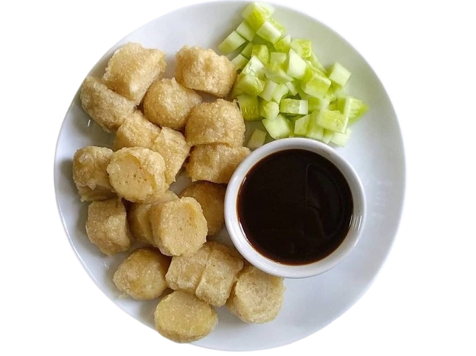
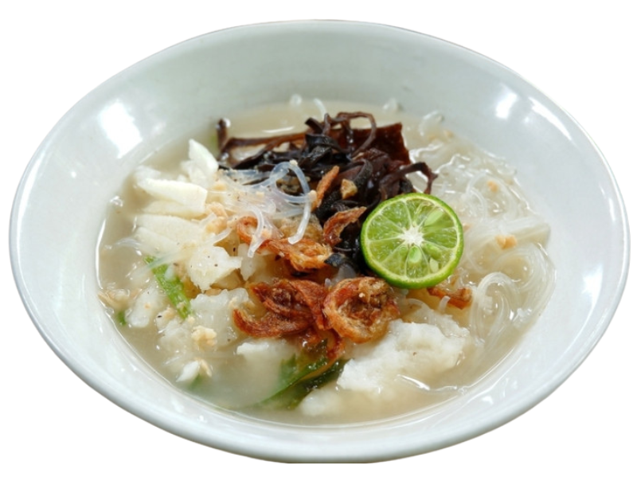
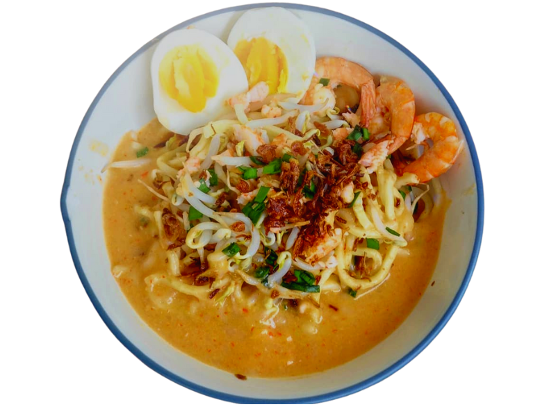
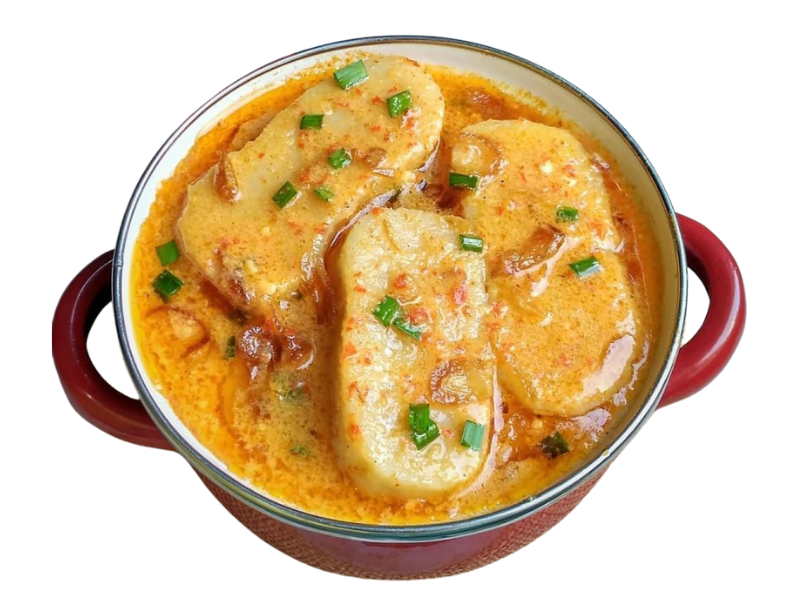
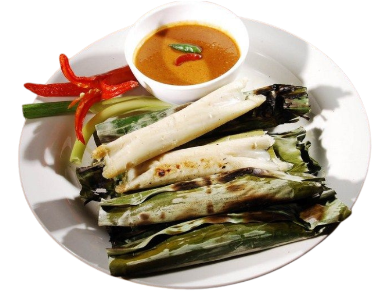
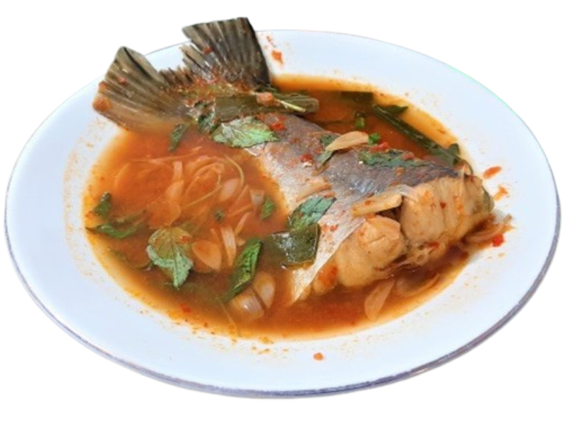

Kuliner
Makanan khas atau makanan tradisional adalah jenis makanan yang memiliki ciri khas dan keunikan tersendiri yang terkait dengan budaya atau tradisi daerah tempat makanan tersebut berasal. Makanan khas biasanya terbuat dari bahan-bahan lokal yang tersedia di daerah tersebut dan disajikan dengan cara yang khas. Makanan khas sering menjadi ikon kuliner dari daerah tertentu dan menjadi daya tarik wisata kuliner. Setiap daerah di Indonesia memiliki makanan khas yang berbeda-beda, mulai dari makanan berat, makanan ringan, hingga minuman tradisional.

Pempek
Makanan ini terbuat dari adonan ikan yang digiling halus, tepung sagu, dan bumbu-bumbu, lalu dicetak dan dipanggang atau direbus. Pempek biasanya disajikan dengan kuah cuka yang terbuat dari cuka, gula merah, garam, dan cabai rawit. Pempek memiliki tekstur yang kenyal dan rasa yang gurih dengan aroma ikan yang khas.

Tekwan
Hidangan ini terdiri dari adonan bola ikan yang lembut yang disajikan dalam kuah kaldu ikan yang bening. Kuah kaldu ikan dibuat dari rebusan tulang ikan, bawang putih, dan rempah-rempah seperti ketumbar dan lada. Selain bola ikan, hidangan ini juga diberi potongan jamur kuping, tauge, dan irisan daun seledri. Tekwan biasanya disajikan panas dan disantap sebagai hidangan utama atau sebagai menu pembuka.

Mie Celor
Mie celor terbuat dari mie kuning yang disajikan dengan kuah kaldu santan yang kaya rasa, kemudian ditambahkan irisan telur, tauge, dan udang sebagai pelengkap. Kuah kaldu mie celor diolah dari campuran santan, kaldu ikan, bumbu-bumbu rempah, dan air jeruk nipis yang memberikan rasa segar pada hidangan. Mie celor biasanya disajikan dengan sambal yang pedas untuk menambah cita rasa yang lebih kompleks.

Laksan
Laksan terbuat dari adonan tepung beras, air, dan garam yang dibentuk seperti mi panjang dan direbus dalam air kaldu udang atau ikan. Laksan disajikan dengan kuah berwarna putih yang terbuat dari bahan-bahan seperti santan, bawang putih, cabai, dan udang atau ikan. Makanan ini biasanya disajikan dengan pelengkap seperti irisan ketupat, tauge, daun kucai, dan emping.

Otak Otak
Otak-otak adalah makanan yang terbuat dari ikan yang dihaluskan dan dicampur dengan bahan-bahan seperti tepung sagu, bawang putih, cabai, santan, dan rempah-rempah lainnya. Adonan ikan yang telah dibumbui tersebut kemudian dibungkus dengan daun pisang dan dipanggang atau dibakar. Otak-otak biasanya disajikan dengan saus kacang atau saus cabai untuk menambah cita rasa.

Pindang Patin
Pindang patin terbuat dari ikan patin yang dimasak dalam kuah kental yang terbuat dari campuran rempah-rempah dan sayuran seperti tomat dan jagung. Ikan patin yang digunakan biasanya diiris dan kemudian direbus dalam kuah tersebut hingga matang. Pindang patin memiliki rasa yang gurih dan sedikit asam, serta aroma yang khas karena penggunaan rempah-rempah seperti kunyit, jahe, dan bawang merah.